Original Broadcast — selected mobile logo
Generated app resources shown on black. The six stones and white radio symbol are preserved.
iPhone AppIconOpaque RGB · 1024pxAndroid · circular maskAdaptive foregroundAndroid · rounded maskSame protected artworkDashboard headers
iPhone · 42pxAndroid · 42pxNotificationThemed icon
White with alpha